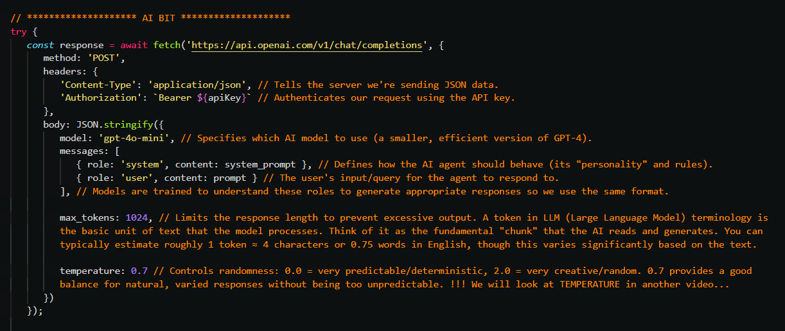
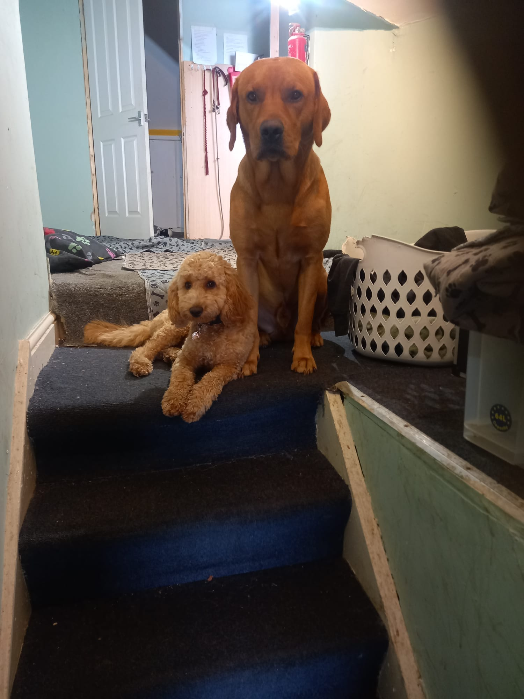
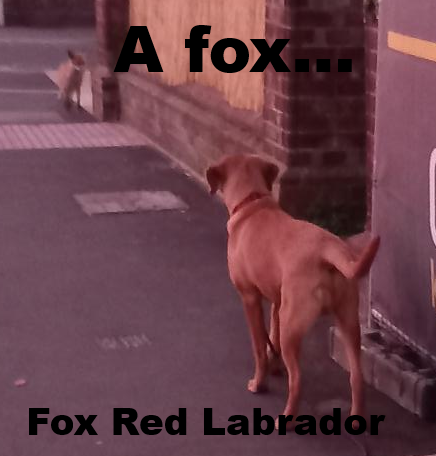
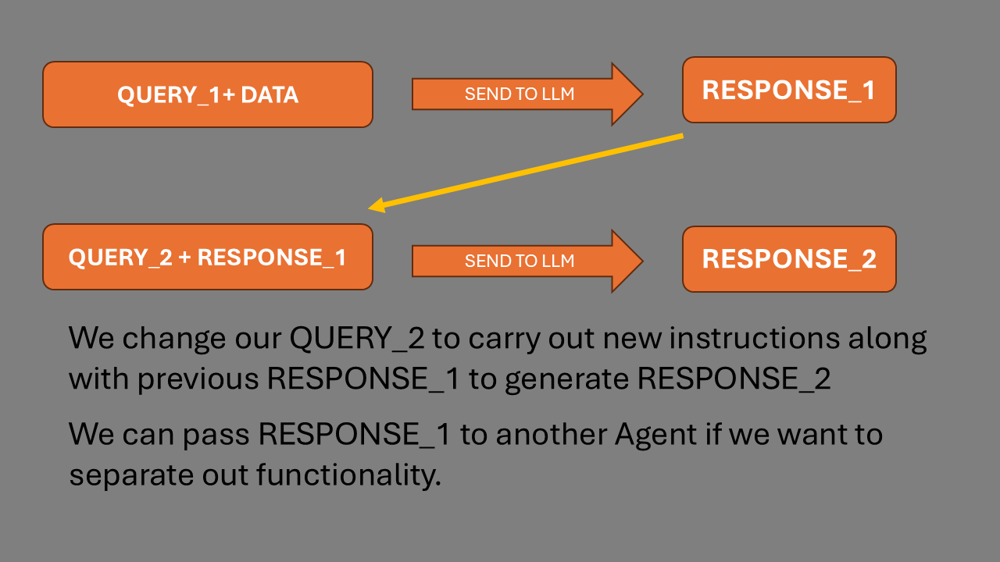
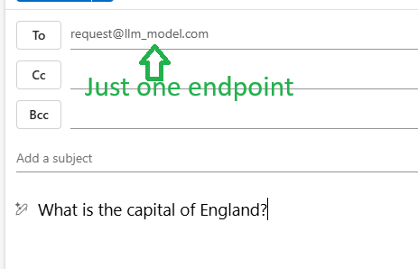
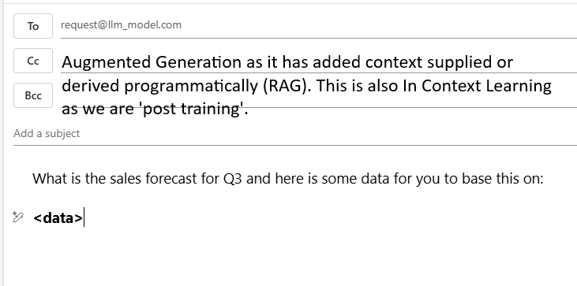
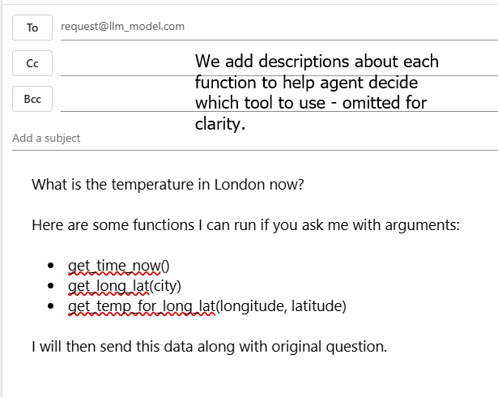
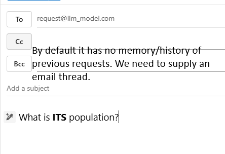

01The one-line pitch
AI Agents are at its core just code making a REST API call — admittedly, a very magical API.
Pull away the
hype and an agent is a fetch (a POST request with a JSON payload) wrapped in a loop, with some
history and some tools bolted on.
That's it.
This whole talk is about demystifying and simplifying AI agents.

What is an AI agent or harness?
An AI agent is an LLM with tools in a loop: the model can ask your code to run a function, then use the result to keep working toward a goal.
AGENT = LLM + HARNESS
A harness adds a variety of features to the basic LLM, such as context management, memory, and tool integration as well as guardrails, sandboxing and learnings.
We will explore these concepts in detail throughout the talk.
Return tool results to the model.
Repeat until it gives a final answer.
This snippet — a fetch to the API with a payload — is the single most important
image of the night.
Read it as one POST request: you send the model's rules and the user's question as a JSON body, and it answers.
My goal tonight is not to teach you a framework. It's to demystify and simplify — to show you the patterns and the structure, not the library details — so that when you go home you can build your own agent, or plug agents into the workflows you already have. Business as usual.
I'm Craig West — one of you, a developer — and when I'm not wrestling with agents you'll find me walking a Fox Red Labrador (Leo) and a Cockapoo (Pip).

We even have a local red fox that follows us on the walks. The dogs and the fox have more patience with me than my code does, most days.

I started out many years ago as a developer and SQL DBA, working through JS and Python frameworks to ML/AI.
02My take on the AI agent moment
Three things were on my mind as I put this talk together:
- Client-side control. Instead of a server team pre-building every endpoint, we create the endpoint on the client side, at runtime, as we go.
- Natural language as the interface. We write the request in Natural Language - in this case English.
- Autonomy. The LLM decides the flow. The model chooses what to do next, not us, within certain constraints.
As one audience member once put it: “This is very underwhelming.”
I took it as a compliment.
03History · Context · Looping · Tools
I keep four words pinned to the front of my mind, because every agent, however fancy, is built from them:
- LoopingRepeat the call until the model decides it has a final answer.
- ContextGive it the facts it needs, either statically or fetched dynamically.
- ToolsRuntime functions it can reach for to do something or get more information.
- HistoryThe model is stateless at its core, so feed previous exchanges back to it.
Everything below is just one of these four ideas wearing a different coat.
Function composition is not new
For me the cleanest mental model is the function frame:
input -> function(input) -> output -> function(output) -> output2

04Progression through the demos
I've written four tiny HTML pages — each one is just a <script> with a fetch.
No build step, no framework, no SDK. They step up from "nothing" to "an agent," and each one adds one more of
the four building blocks.
The basic call
The very first page sends ONE prompt to OpenRouter and prints the answer. Under the hood it's a
system message (rules and personality) plus a user message, POSTed over HTTPS.
This is the whole magic trick, unwrapped. No state. Every click is a brand new conversation as far as the model is concerned. If I button-mash this page, the AI cannot remember what I said a second ago — because the API doesn't store anything.
This snippet — a fetch with a payload — is the most important takeaway of
the whole night. Everything else tonight hangs a harness around this line.

RAG
Still one call. But now I glue extra facts into the system prompt — facts the model was never trained on ("the meetup is..."). This is Retrieval-Augmented Generation in its simplest form: bake the facts in before you ask.
It can be dynamic, too. That block of context normally comes from a database, an API, or a vector search. But the recipe never changes — retrieve the facts, stuff them in the prompt, ask. Context engineering, done.

Tool calling
Now it gets interesting. This page describes two tools to the model, get_weather and
get_sum, using JSON — name, description, parameter schema. Crucially, the
model never runs them. It only asks: "call this tool, with these arguments." My code does the
actual execution via a switch (no magic), then hands the result back into the conversation.
And here's the shift: this is the agent loop. The loop keeps running while the model asks for tools and stops when it decides it has a final answer (with a max-iteration guard so we never loop forever). The model directs the flow. That's the autonomy point from earlier.

Memory
Last building block. Same single fetch, but now we keep the whole conversation in
messages and resend all of it every call. That's all "memory" is — you replay
the tape back into the model each time. And because it's a browser, we persist it to
localStorage, so a refresh keeps the chat.
The honest cost is right in the console: more history = more tokens = more money. Memory engineering is really token budget management.

05PROMPT ENGINEERING → CONTEXT ENGINEERING → HARNESS ENGINEERING
I want to end on the point that changed how I think.
Tools to build your own coding agent are not as scary as they sound. You need: list files, read a file, edit a
file, write a file — and honestly, bash alone is enough; it subsumes the rest.
The bigger idea though, the one I keep telling people:
A harness with a lower model can outperform a higher model. Often it's the harness — the loop, the context, the tools, the memory — that decides the outcome, not the raw intelligence of the LLM.
That's liberating. It means the craft and the content of our jobs still matter. The engineering around the model is what makes it sing. My minimal coding agent is just a loop that runs until it finds an answer — and then I look back at the demo and think: everything we saw tonight was already there in miniature.
06Build a coding agent with five tools
My mini coding agent in mini_coding_agent/agent.py is a ReAct loop. The model can only act
through the tools I hand it, and a coding agent needs very few of them:
- ListSee what files are in the working folder.
- ReadLoad a file's contents into the conversation.
- WriteCreate a new file or overwrite an existing one.
- EditReplace one piece of an existing file, so the model doesn't rewrite the whole thing.
Every other tool is a shell command in disguise. ls lists, cat reads,
> writes and sed edits. Give the model a shell in the working folder and it
can do everything a coding agent does. The named tools just make each action easier to see in the logs.
The model only ever asks for a tool call. My code runs it, returns the result, and the loop continues until the model has an answer.
The repo version currently has write, edit, read and a shell run tool. It has no
separate list tool, because ls through the shell covers that.
What would make it a fuller coding-agent harness?
The core loop is here. To approach the capabilities of mature coding agents, I would add the engineering around it:
- Understand the repositorySearch files, inspect Git status, map the project, and load local
instructions such as
AGENTS.mdbefore changing code. - Review and recover changesShow diffs, checkpoint edits, support undo, and use branches or worktrees so experiments don't overwrite a developer's work.
- Verify the resultRun focused tests, linters, and type checks; read failures and iterate until the requested checks pass.
- Set safety boundariesConfine file access to the workspace, sandbox commands, protect secrets, and ask before risky or destructive actions.
- Manage long tasks and contextTrack a plan, retrieve relevant code, summarize old conversation, and save enough state to resume interrupted work.
- Make runs dependableStream progress, handle timeouts and API errors, support cancellation, and keep clear logs plus step and token budgets.
These features don't change the basic loop. They make it safer, easier to inspect, and more reliable on real repositories.
07Leave-behinds
Everything tonight is in the repo — the HTML pages, the notes, links to the explainer videos, and my mini coding-agent for you to fork and build on.
github.com/Python-Test-Engineer/BrightonDevAI-meetup-nov-2026Look at the patterns and the structure, not the code details. That is what got me through the upside-down-mouse moment — and it's what turns "AI agents" from a different world back into just code.